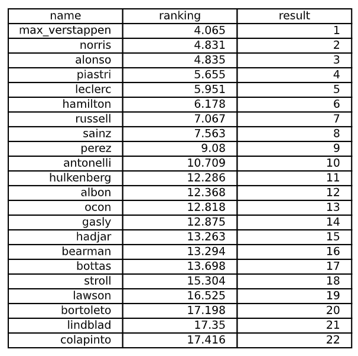

F1 2026 WDC Prediction
Completed: 06/07/2026
In this project, I tried to predict the 2026 Formula 1 World Drivers' Championship (WDC), building a machine learning models. It predictes a rank for every driver based on their previous performance. At the end a final ranking is calculated based on the predicted ranks of all drivers. The features are: Average result, delta of first to most recent result, delta of the two most recent results and the year.
In the project I created the dataset, cleaned and prepared it for the model, tuned hyperparameters, trained the model and evaluated it. Finally I used the model to predict the 2026 WDC and contextualized the results.

Technologies Used
- Python
- Pandas
- Scikit-learn
- Seaborn
- FastF1
- Jupyter Notebook
Key Features
- Data cleaning and preparing
- Feature engineering for predictive modeling
- Hyperparameter tuning of ML-Model
- Evaluation, interpretation and analysis of model results
Learnings
I did this project to get more familiar with machine learning and predictive modeling. I learned how to clean and prepare data for modeling, how to engineer features that improve model performance, and how to tune hyperparameters for optimal results.
Additionally, I gained experience in evaluating and interpreting model results, which helped me understand what kind of features have which impact on the model and how to improve it.
Overall, I feel way more confident for future projects with machine learning, because I now know better how to approach a project like this and how to find good features for your goal.